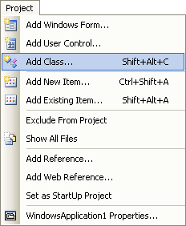
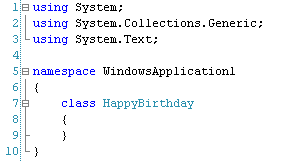
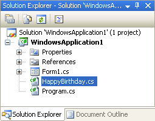
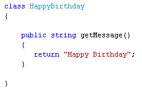

A First Class in C# .NET
<< Part of an ongoing lesson - first part is here >>
The first Class that you'll create is a very simple one, and won't be that much use in the real world. But it will show you how Classes are structured, and how Objects are created from Classes. All our Class will do is display a "Happy Birthday" Message.
So start a new project, and add a button to your form. We'll use the button later. To add a new class to your programme, click the Project menu at the top of C#. From the Project menu, select Add Class:

You should then see the Add New Item dialogue box popping up. Select the Class item from the available templates. In the Name box at the bottom, type this:
HappyBirthday.cs
Then click the Add button on the dialogue box. You should see all the default code for your class appear (users of later versions of Visual Studio may see more using statements):

WindowsApplication1 was the default name when we created a new project. If we had changed the default project name to, say, Birthday then it would have said namespace Birthday. (A namespace is where classes are grouped together. System is a namespace. As too are Collections, Generic, and Text.)
Notice that the Solution Explorer on the right is showing your Class:

The class called HappyBirthday.cs is now an item under Form1.cs. The .cs extension means that the file is a Class.
The Class code stub that C# created for us, though, was this:
class HappyBirthday
{
}
So you start with the word "class" followed by a space. The name of your class comes next, followed by a pair of curly brackets. All the code for your class goes between the two curly brackets.
Let's add a simple message to the class.
What we'll do is to create a Method in the class that displays a message. So
add this to your code:

The name of our Method is getMessage, but we could have called it almost anything we liked. The Method is going to return a string. Notice that we've made the Method public. A public Method (or variable) set up inside of a class means that it can be seen from the outside. So a button on a form can see it, for example. If you make it private then it can only be seen from inside of the class.
This is just a normal Method, though, and you've covered these in an earlier section. The only difference this time is that it's in a Class of its own.
In the next part, you'll learn how to create an Object from your Class.